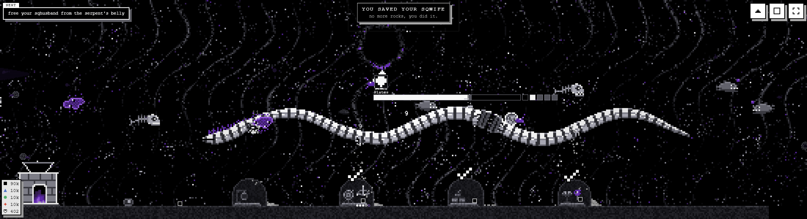

Using the whole height of the deep: creatures living from the portal down to the floor, each in the band of water its real-world kin lives in, sunlit at the top to hadal at the bottom. Three layouts, from "draw it in and move nothing" to "put the stations up the height".
A mock drawn from plain shapes, not the game. The deep here is drawn cell by cell at its real proportions (520 by 130 cells, plus the 9-cell floor margin the glass keeps), with the coil, the portal, the domes and the bar at their real sizes and places. It cannot show: the abyss field's flowing water behind everything (a few still current lines stand in for it), the real props, fighters, attacks and numbers, the meal swim (the serpent eating one of these), the phone, and how busy it feels with a fight on. The sprites are first drafts on the 6-pixel grid to show what reads at this size, not finished drawings.

The deep-all scene on a 2200-wide window, the whole width of the deep on one glass.
Measured from the shots: every pixel brighter than the water, counted row by row over the deep's 520 screen rows (HUD and scene notices masked), across deep-all, deep-chip, deep-numbers and meal-swim.
Depths are the usual figures for each animal's range, rounded. The zones are not to scale: the real hadal zone is half the ocean's depth and the sunlit a fiftieth of it, so the bands here are cut to what reads.
What rides along with any of the three: the serpent eats these. Today a meal is one of eight creatures swimming in from the near stream's band over the coil; with creatures through the whole height, a meal could come down from its own zone (a longer swim, so MEAL_SWIM_S grows) or stay drawn from the band it is now. The zone tint is a few greys of the deep's own ramp, dithered, never a gradient; it can be dropped from any option (button above).